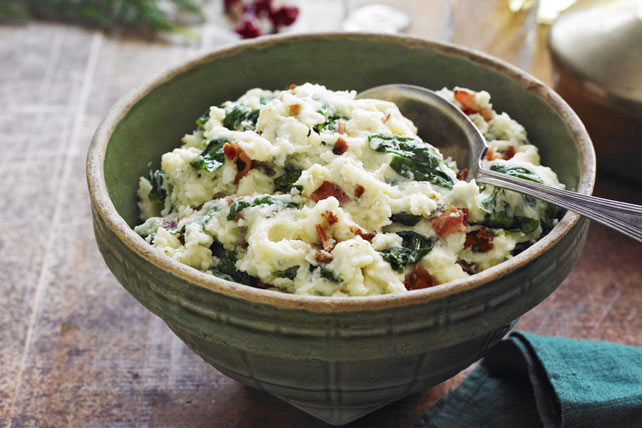
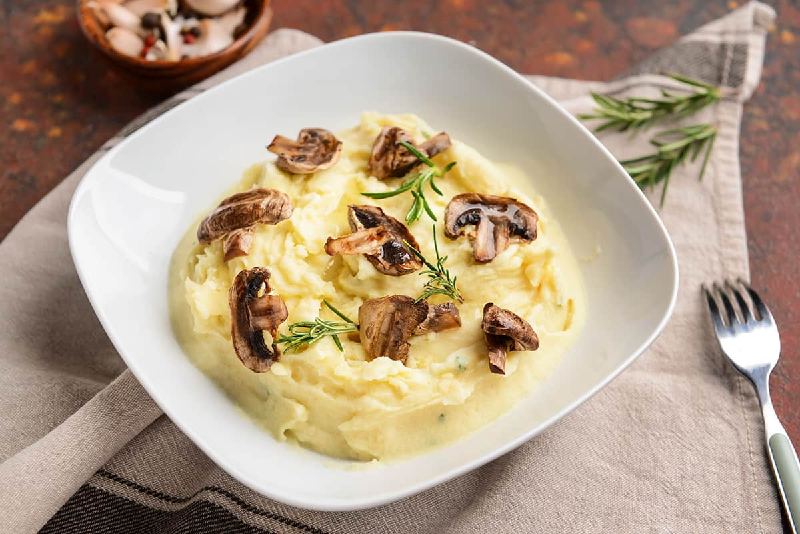

Puré de papa con espinacas
Disfruta de un puré de papa suave y cremoso.

Puré de papa con tocino
Una versión deliciosa del puré de papa con un toque de tocino crujiente.

Puré de papa con champiñones
Un puré de papa aromatizado con el sabor del champiñón. Una delicia para el paladar.